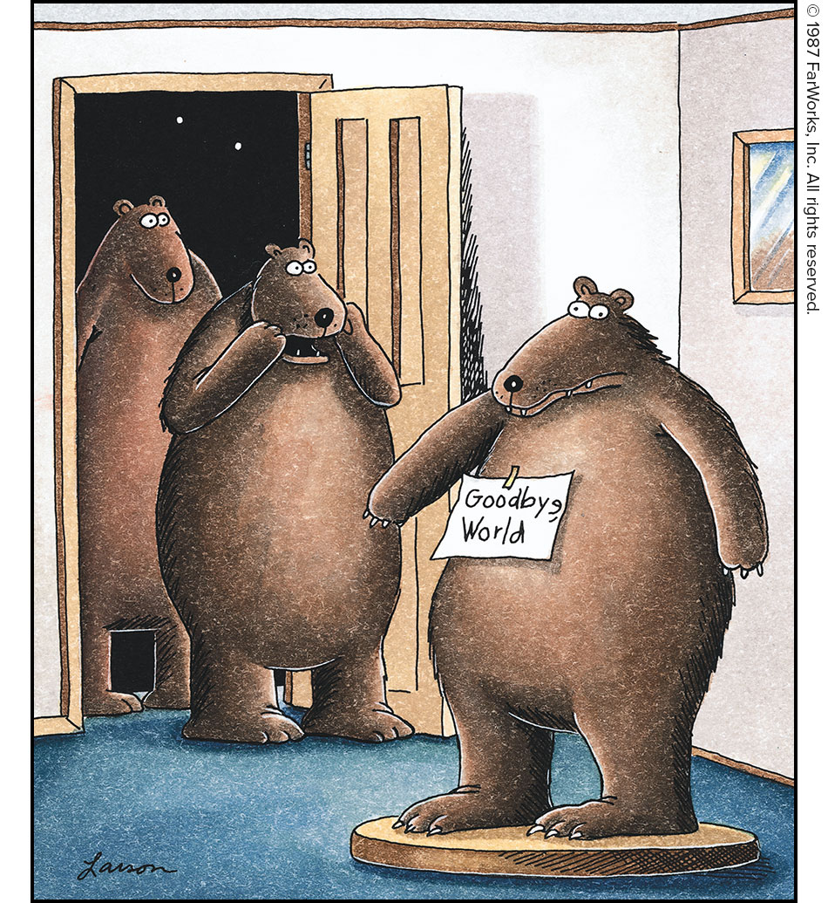

Your Daily Computer Brief
🔴 ALERT
**Major Password Breaches: 85 Million Records Exposed — Check Yours Now** Two massive data breaches hit this month. Abbott Labs lost 30+ million cancer-diagnostic records — Social Security numbers, medical histories, insurance info. AI music app Suno leaked 55 million users' names, emails, and partial payment data. If you've reused a password anywhere, criminals are already testing it against bank, email, and shopping sites. What to do: Go to **HaveIBeenPwned.com** and enter your email. If it shows up, change that password *everywhere you used it*. Use a unique password for every account — a password manager (Bitwarden, 1Password, KeePass) makes this painless. Turn on two-factor authentication on your email and bank *today*. Why it matters: Credential stuffing attacks are automated. Bots try your leaked email/password combo on thousands of sites in minutes. One reused password = open door. *Source: BleepingComputer "Abbott Labs Breach: 30M Cancer Records Stolen" — July 2026; TechCrunch "Suno AI Breach Exposes 55M Users" — July 2026; HaveIBeenPwned.com*
Today in Tech
- **Nvidia extends Windows 10 RTX driver support through October 2026** — Security updates only for older GPUs (GTX 900/1000 series), buying time if your PC can't run Windows 11. (Source: NVIDIA Blog / Windows Forum — July 2026)
- **Florida awards $223M to expand rural broadband** — Fiber builds targeting underserved Panhandle and North Florida communities including areas around Lake City. Check the Florida Office of Broadband map for your address. (Source: FL Gov Press Office — July 2026)
- **Windows 11 July update patches 570 flaws including 3 zero-days** — Microsoft's AI tools found bugs 4× faster than last year. Update installs automatically; just restart when prompted. (Source: Windows Central, BleepingComputer — July 2026)
Daily Tip
Unplug your router's power cord, wait 30 full seconds, plug it back in. Wait two minutes for all lights to settle. This clears stuck connections and memory leaks that slow things down. If it's still slow, move the router off the floor, away from thick walls and the microwave — signals travel better with breathing room.
😄 COMEDY BREAK
